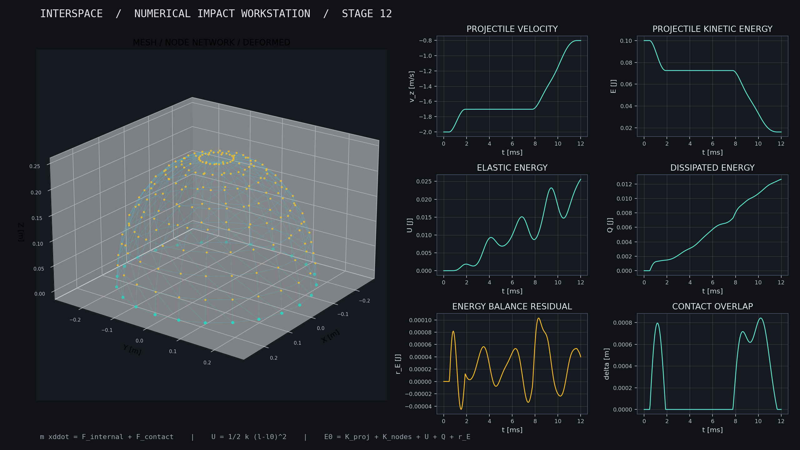

X(θ, φ) = R [sinφ cosθ, sinφ sinθ, cosφ]
A hemispherical structural mesh, with its equator at z = 0. Discrete elements approximate a material-supported surface.
The implemented models use established mechanics and electromechanical equations. The proposed architecture is a computational hypothesis, not an experimentally validated device. Equations below are reference formulations; see source and technical dossier for the actual discretizations.
A hemispherical structural mesh, with its equator at z = 0. Discrete elements approximate a material-supported surface.
Continuum momentum balance motivates stress-wave transport. The discrete network requires effective-property calibration.
Deployment requires finite mechanical work and force. Tested configurations exceeded illustrative actuator limits.
Reciprocal piezoelectric coupling transfers energy between mechanical and electrical states. Load dissipation is not stored energy.
E_total = T_projectile + T_shell + U_elastic
+ U_contact + E_electrical + Q_heat
r_E(t) = E_total(t) - E_total(0) - W_externalUse numerical residuals to test the discretization, not to infer device feasibility.
ρ ∂²u/∂t² = ∇ · σ + b σ = C : ε ε = ½(∇u + ∇uᵀ)
These continuum equations motivate transport; the spring mesh is not automatically equivalent to a calibrated elastic shell.
Custom system-level integration of spatial impact transport, controllable dissipation, inverse-dynamics deployment audits, and electromechanical ring recovery. Scientific algorithmic novelty is not established without literature comparison and external benchmarks.
Browse the actual released modules. Established primitives are distinguished from INTERSPACE-specific orchestration. Each listing is source, not pseudocode.
Geometry → edge forces → contact forces → time integration → energy ledger → transducer model → storage accounting → sensitivity / baseline comparisons
Velocity-Verlet, penalty contact, barycentric force distribution, finite-difference diagnostics, spring-damper networks and piezoelectric constitutive models.
Inspect the actual Python implementation behind the research. Modules are preserved verbatim from the released source archive; the browser visualization is a replay rather than a replacement for these solvers.
| MODULE / OPEN SOURCE | LINES | CLASSES | FUNCTIONS |
|---|---|---|---|
| adaptive.py | 88 | AdaptiveConfig | run_adaptive |
| transport3d.py | 113 | TransportConfig | run |
| stage10_extended.py | 41 | StorageConfig | run |
| final_validation.py | 104 | CoupledConfig | run, deployment_scan, matched_study |
| __init__.py | 1 | — | — |
| deployment.py | 67 | DeploymentConfig | quintic, simulate |
| stage11.py | 37 | — | study, convergence_pairs |
| recovery.py | 79 | RecoveryConfig | dashpot_forces, run_recovery |
| coupling.py | 115 | CouplingConfig | envelope, reference_weights, coupling_terms, combined_forces, coupled_step, run_coupled |
| field.py | 96 | FieldConfig | validate, ramp, interaction, simulate_field, required_field_for_energy |
| impact.py | 121 | ImpactConfig | build, bond_metrics, energy_partition, run_impact |
| surface_contact.py | 69 | — | triangles, closest_triangle, contact |
| core.py | 119 | Parameters, State | make_lattice, forces_and_potential, diagnostics, step, simulate |
| physical.py | 62 | PhysicalParameters | derivatives, energy, run |
| hemisphere.py | 114 | DomeConfig | mesh, internal, run |
CSV tables from simulations. Not experimental observations. Load in MATLAB using readtable('stage12_baseline.csv').
These are recorded numerical outputs, not independent experimental measurements. CSV files can be opened in MATLAB, Python, Excel, or other analysis environments.
All source-level evidence, derivations, known limitations, original research notes and validation reports are linked below.
Full model basis: geometry, Morse interactions, structural dynamics, contact, wave transport, actuation, piezoelectric recovery, conservation, and field limitations.
OPEN REPORT ↗DOC / 02Engineering case studyTechnical positioning, implemented capabilities, computational results, assumptions and realistic applications for an engineering agency.
OPEN REPORT ↗DOC / 03Reproducibility protocolPython environment, tests, experiment regeneration and source-level evidence for the reported numerical results.
OPEN REPORT ↗